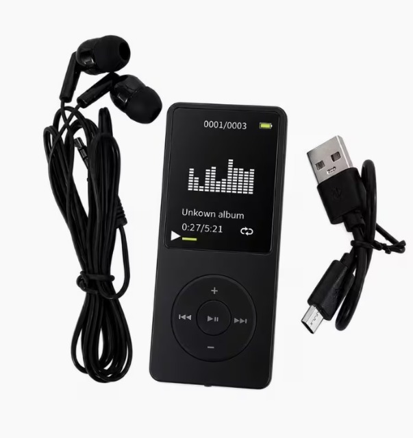
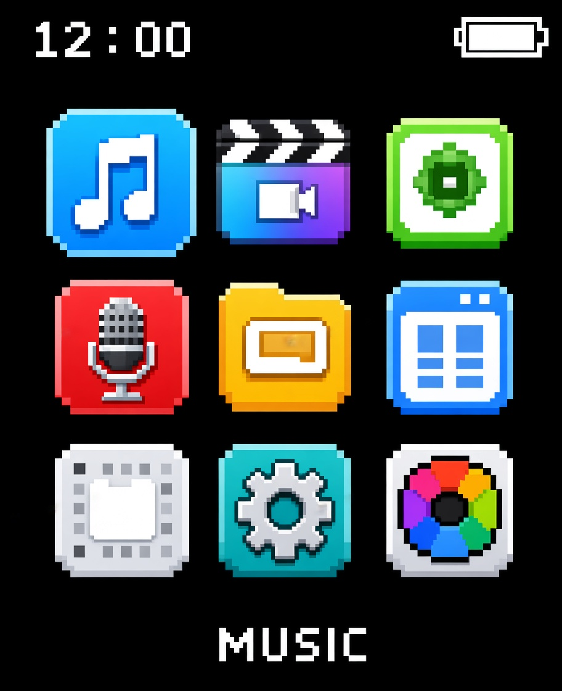

Manual de Usuario
MP3 / MP4 · Pantalla TFT 1.8" · Radio FM · Bluetooth

Sección 1.2
Sección 1.3
Gracias por adquirir este reproductor de audio digital (MP3). Este manual explica cómo configurarlo, operarlo día a día y resolver los problemas más comunes.
Sección 2.2

Sección 2.3
Estas son las reglas y rangos que gobiernan el comportamiento del equipo. Respetarlas evita errores de uso y asegura el funcionamiento correcto de cada función.
| Parámetro | Regla / Rango permitido |
|---|---|
| Apagado automático | Configurable de 1 a 99 minutos, en pasos de 1 minuto. |
| Brillo de pantalla | Rango de 0 a 11 (valor por defecto: 5). |
| Tiempo de retroiluminación | Opciones fijas: 10s, 20s, 30s o siempre encendida. |
| Protector de pantalla | Ninguno, reloj digital, álbum de fotos o pantalla apagada. |
| Cronómetro | Admite hasta 5 temporizadores simultáneos. |
| Banda de radio FM | 87.5–108 MHz (China) / 76–90 MHz (Japón). |
| Carga de batería | Requiere cargador de salida 5V, 500–1000 mA. Se puede grabar audio mientras se carga. |
| Formato de música | Todos los formatos de audio comunes; tasa de bits de 16 Kbps a 320 Kbps. |
| Formato de video | AMV/AVI, resolución 160×128 píxeles (requiere conversión previa). |
| Formato de imagen | JPG, BMP, GIF. |
| Formato de texto (e-book) | TXT. |
| Formato de letras | LRC. |
| Almacenamiento externo | Tarjeta Micro SD / MMC / SDHC. |
| Temperatura de operación | 0 °C a 45 °C. |
| Ecualizador (EQ) | Normal, Rock, Punk, Hip Hop, Jazz, Clásico, Electrónico, Personalizado. |
Sección 3.1
| Problema | Posible causa | Solución |
|---|---|---|
| El equipo no enciende | Batería agotada | Conecte el cargador (5V, 500–1000 mA) durante unos minutos y vuelva a intentar mantener presionado ⏻/🔒 por 3 segundos. |
| Los botones táctiles no responden o actúan de forma errática | Interferencia al conectar USB/cargador, o botón cubierto | Desconecte el cable, asegúrese de no cubrir el botón táctil y reinicie el reproductor. |
| No se reproduce el video | El archivo no fue convertido al formato compatible | Convierta el archivo con la herramienta de video incluida en el CD-ROM antes de copiarlo al equipo. |
| No se detecta la tarjeta de memoria | Tarjeta no compatible o mal insertada | Verifique que sea Micro SD/MMC/SDHC y que esté bien colocada en la ranura ②. |
| El Bluetooth no empareja | Bluetooth apagado o PIN requerido | Confirme que "Bluetooth Abierto/ON" esté activo y consulte al proveedor del otro dispositivo si pide código PIN. |
| El equipo no se reconoce en la computadora | Cable o puerto USB defectuoso | Use el cable USB incluido y conéctelo a un puerto USB2.0 de la computadora. |
Sección 3.2
| Mensaje / Estado | Significado | Acción recomendada |
|---|---|---|
| Botones "desordenados" (sin respuesta consistente) | Conflicto de la superficie táctil durante carga o conexión | Reiniciar el reproductor, según indica el fabricante. |
| Espacio en disco lleno | El almacenamiento interno o la tarjeta externa alcanzó su capacidad máxima | Revisar "Info → Espacio en disco" y eliminar archivos o formatear el dispositivo. |
| Formato de archivo no soportado | El archivo no corresponde a los formatos admitidos (audio, AMV/AVI, JPG/BMP/GIF, TXT) | Convertir el archivo a un formato compatible antes de transferirlo. |
| Sin señal / sin emisoras en radio FM | Fuera del rango de frecuencia soportado | Verificar que la frecuencia esté dentro de 87.5–108 MHz (China) o 76–90 MHz (Japón). |
| El equipo no carga | Cargador con salida distinta a 5V / 500–1000 mA | Usar el cargador o cable USB especificado en las características técnicas. |
Sección 3.3
Sección 3.4
Soporte técnico
Correo: Soportetecnico@gmail.com
Teléfono: +503 6060 4178
Horario de atención: lunes a viernes, 9:00 A.M – 12:00 P.M
Datos de contacto de referencia.